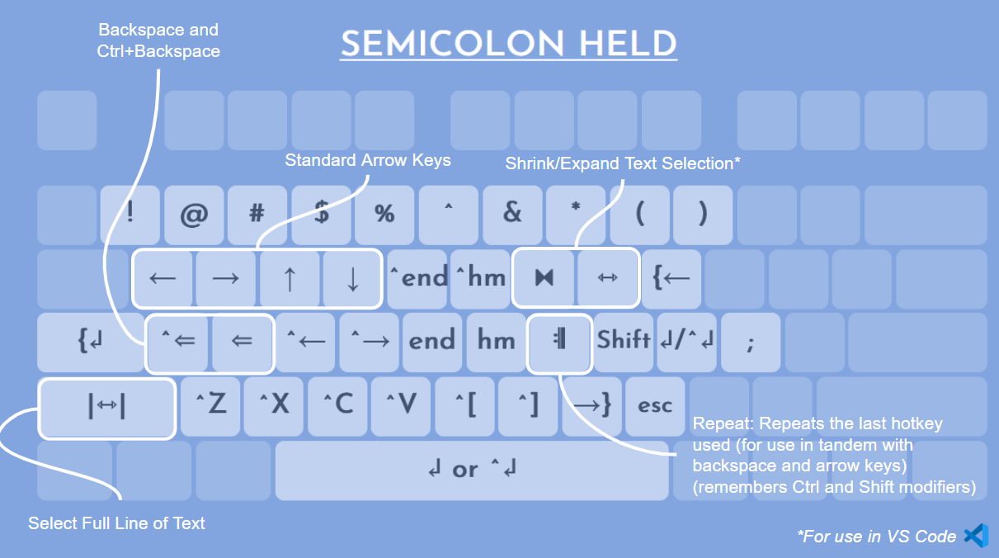
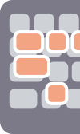

Dynamic Keyboard Remapping Script
Personal ongoing project
Designed over several years

Problem and Solution
- Problem: Standard keyboard layouts for typing often require reaching far for keys that are frequently used (such as arrow keys), leading to inefficiency and strain.
- Solution: A script that changes the functionality of your keyboard by remapping frequently used keys to more accessible locations, improving speed and comfort
Skills Demonstrated
- Technical skills: Scripting (with Autohotkey), debugging, ergonomic optimization
- Soft skills: Creative problem-solving, iterative design
Results
- Improved typing efficiency and ergonomics
- Greater productivity and less physical strain
Description
A program (Autohotkey script) that enhances the functionality and ergonomics of the keyboard by relocating frequently used keys (such as arrow keys, backspace, and home/end) to more easily reachable positions when holding down specific modifier keys such as the semicolon key and Caps Lock. The result is a highly effective tool for boosting productivity when writing code and documents, refined over years of experimentation and revisions.
- Contextual functions: Some keys perform different actions based on the context. For example, the spacebar can act as either the “Enter” key or “Ctrl+Enter”. Its function is toggled by the L key.
- Repeat key: The “J” key repeats the last hotkey used, speeding up repetitive tasks. If no action has been performed since the modifier was held, “J” acts as the “Tab” key instead.